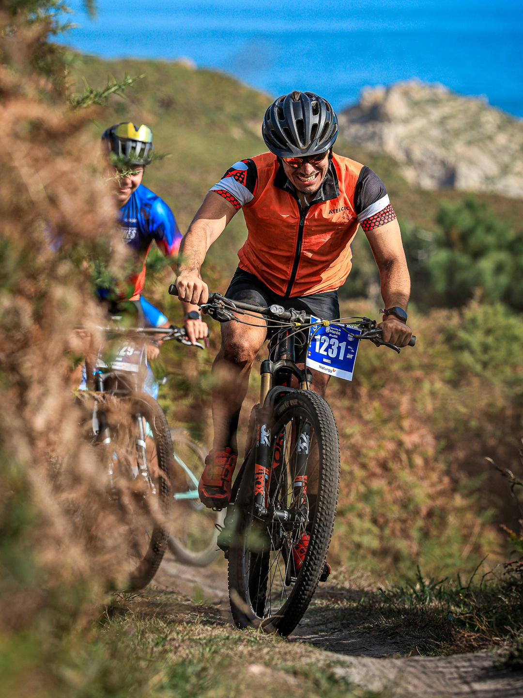
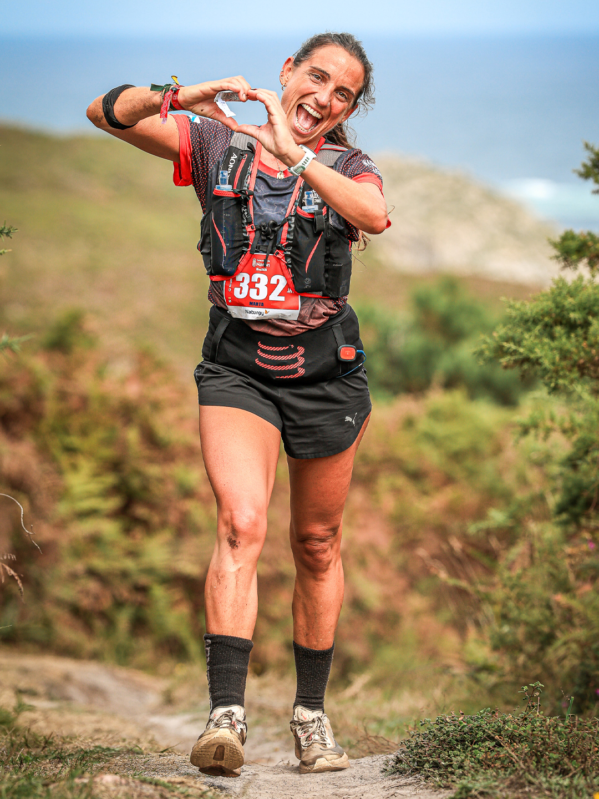
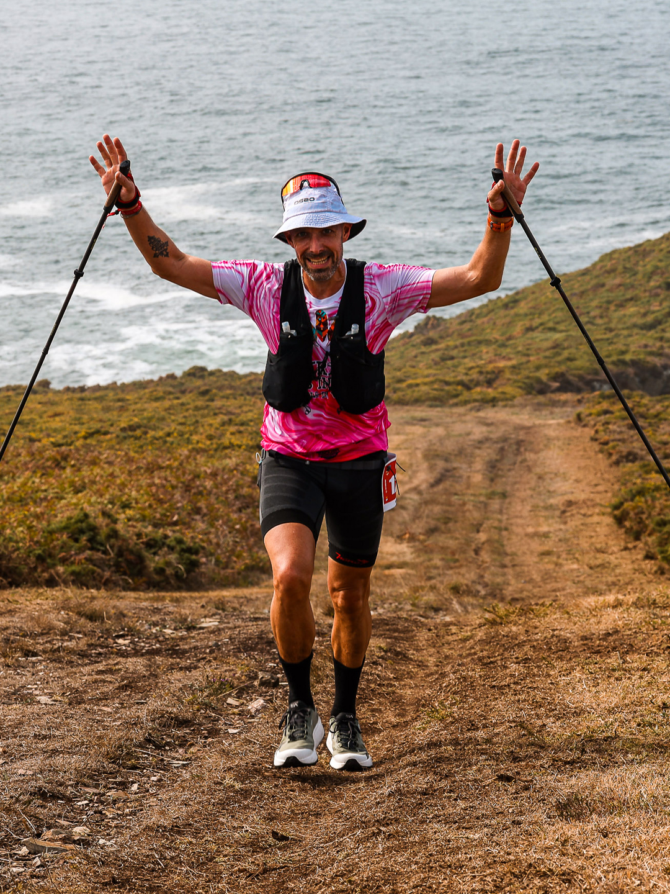

The fifth edition of 21 Leguas Narón brought a record 1,150 participants to Galicia on 26 September for a 101-kilometre challenge linking Narón, Ferrol, Valdoviño and San Sadurniño.
Ismael Vázquez Prieto won the men’s foot race in 8:24:55. Juan José Vidal took second place and José Santiago finished third. Marta Real Valiño led the women’s standings in 12:28:28, ahead of Eva María Casapie González and Ana María Martínez Fernández.

One distance, several ways to meet the challenge
The event combined individual and team categories on foot with MTB, pairs, teams and e-bike divisions. Walkers and runners had up to 24 hours to finish, while cyclists faced a 12-hour limit. The circular route started and finished at the Xuvia seafront and crossed the Arsenal, the Navantia shipyard and more than 40 kilometres of the Costa Ártabra.

Organised by Club Deportivo Narón101 and Concello de Narón, the ultradistance event joined athletic ambition with the natural, naval and industrial landscape of the Ferrolterra region. Image Media photographers Adília Pinto and Claudio João documented both the cycling and foot sections.

Image Media coverage
Reporting: IM News Editorial Desk
Coverage photographers: Adília Pinto and Claudio João / Image Media
Event format and route checked against the official 21 Leguas website and 2026 regulations; results and participation checked against published post-event reporting.